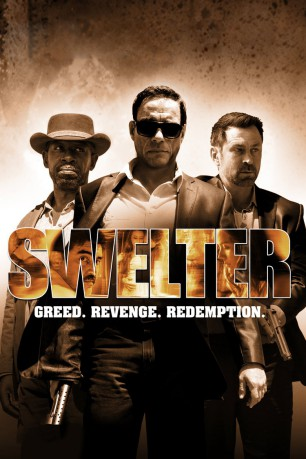

#1116 Swelter: Gier. Rache. Erlösung.
Alternativ: Swelter
 
 IMDB-Wertung: 4.6 / 10
IMDB-Wertung: 4.6 / 10  Metascore: 0
Metascore: 0 
Nachdem eine Gruppe von fünf Gangstern in Las Vegas ein Kasino um 100 Millionen Dollar erleichtert hat, werden vier Mitglieder der Bande zügig von der Polizei festgenommen. Doch der fünfte Mann kann samt Beute entkommen. Nach zehn Jahren schaffen es die vier Inhaftierten aus einem Hochsicherheitsgefängnis zu entkommen und machen sich auf die Suche nach ihrem ehemaligen Komplizen. Nachdem er seine Erinnerung verloren hat, ist dieser zu einem rechtschaffenden Sheriff in einem kleinen Wüsten-Ort geworden. Als seine ehemaligen Gangster-Freunde auftauchen zählt für ihn daher nur eines: Sein Leben und das seiner Familie zu beschützen!
Jahr: 2014
Dauer: 96 Minuten
FSK: 16
Land: USA Studio: Well Go USA EntertainmentTonspuren:
Untertitel:
Auflösung: 720p (1280x528) Größe: 2447 MB
Genre: Action, Krimi, Drama, Thriller
Regisseur: Keith Parmer
Drehbuch: Keith Parmer
Soundtrack: Tree Adams
Darsteller:
 Jean-Claude Van Damme als Stillman
Jean-Claude Van Damme als Stillman Alfred Molina als Doc
Alfred Molina als Doc Lennie James als Bishop
Lennie James als Bishop- Mindy Robinson als Party Host
- Catalina Sandino Moreno als Carmen
- Courtney Hope als Halle
- Josh Henderson als Boyd
- Grant Bowler als Cole
- Freya Tingley als London
- Abby Miller als Peaches
 Tracey Walter als old man Henry johnson
Tracey Walter als old man Henry johnson Peter Vack als Madsen
Peter Vack als Madsen Brad Carter als Mechanic
Brad Carter als Mechanic- Kelly King als Frankie
- Guy Wilson als Johnny
- DeeDee Bigelow als Diner Patron
 Arie Verveen als Reverend Joshua Stone
Arie Verveen als Reverend Joshua Stone- Richard Whiten als Tony
- Greg Vrotsos als Carl
- Daniele Favilli als Kane
- Brianna Womick als Tribe Woman
- Travis Johns als Mr. Jennings
- Nikola Kent als Officer Nichols
- Alan Simpson als Ronnie
- Vince Lozano als Mouth
- Jenny Stumme als Jayne Mansfield
- Tokala Clifford als Mezcal
- Clint Jung als Sapphire Security Guard
- Bryan Friday als Patrolman
- Ashley Sutton als Stacey
- Joe Sobalo Jr. als Corrections Officer
- Leah Shaw als Towns person
- Dana Schick als Stunning Biker Girl
- Ellen Gerstein als Harriet
- James P. Bennett als Biker
- Dailyn Matthews als Female Patrolman
- Ice Aysun Leidl als Rain
- Robert Zachar als Security Chief Ben
- Aly French als Sadie
- John Dauer als Officer Daniels
- Krystel Baker als Las Vegas Tourist
- Dawn Lewis als Absinthe
- Woody Naismith als Bouncer
- Rachel Ann Mullins als Stripper
- Adelyne Liu als Mindy
- Jason Weary als Stripclub john
- Wanda Colon als Hannah
- Adam LaCoste als Patrolman
- John Dauer als Officer Daniels
- Arthur Trace als Coin Flipper
Datei: X:\2014(N-Z)\Swelter Gier. Rache. Erlösung. (2014, FSK16, 1280x528).mkv seit 21.05.2015
Festplatte: HD 2013(I-Z)-2014(A-Z)
 Es gibt insgesamt 163 Filme in der Gruppe '2014(N-Z)'
Es gibt insgesamt 163 Filme in der Gruppe '2014(N-Z)'